Префектура Хёго · Тацуно и Ако · еда
Вкус Харимы: светлый соевый соус Тацуно, сомэн с реки Ибо и солёные сладости Ако
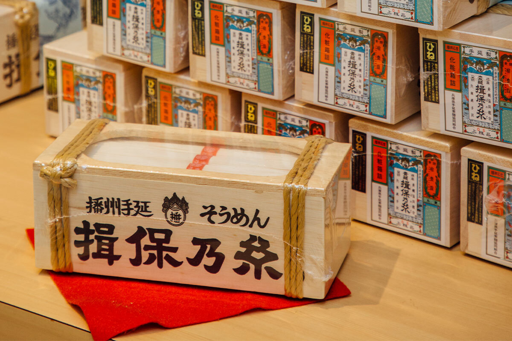
Харима, западная часть префектуры Хёго, выходит к морю Харима-нада, а с её гор к нему бегут реки. Вода, выращенный на ней рис и пшеница, соль Ако: из этого здесь веками делают сакэ, лапшу, соевый соус и сладости.
Харима
Еда, которую дали реки
Мы ехали на запад вдоль моря, через Акаси, Химэдзи, Тацуно и Ако. Реки, стекающие с гор Харимы, и широкий залив, который их принимает, объясняют, почему местные так доверяют своим продуктам. Речная вода, рис и пшеница, которые на ней вырастают, и соль из Ако передаются из поколения в поколение, поэтому и вкусы здесь живут веками.
Сакэ
«Мэйдзё сюдзо»: пивоварня с именем замка
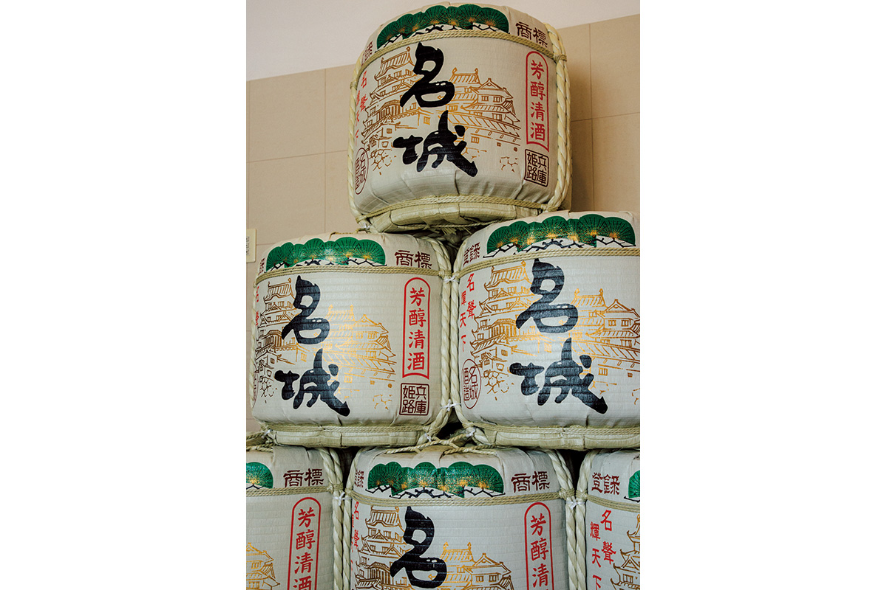
В «Харима-фудоки», описании провинции, составленном в эпоху Нара (710–794), есть рассказ о том, как из риса сделали вино и поднесли его богам. Многие считают, что это самое раннее упоминание японского сакэ.
«Мэйдзё сюдзо» появилась в 1966 году, когда шесть пивоварен Химэдзи объединились вокруг самой старой из них, «Имаи сюдзо», основанной в 1864 году. Название означает «знаменитый замок» и отсылает к замку Химэдзи. Сегодня пивоварня стоит на берегу реки Итикава. Кондиционеры и компьютерный контроль позволяют варить сакэ круглый год. За год здесь закладывают объём, равный примерно 700 000 больших бутылок по 1,8 литра: это самый большой объём в Хариме.
«Мэйдзё сюдзо»
- Адрес
- префектура Хёго, Химэдзи, Тоётоми-тё Тоётоми, 2222-5
- Телефон
- +81 79-264-0181
- Часы работы
- 8:30–17:00
- Выходные
- суббота, воскресенье и праздники (с октября по декабрь только воскресенье, с января по апрель через неделю)
Лапша
«Ибо-но ито»: сомэн с реки Ибо
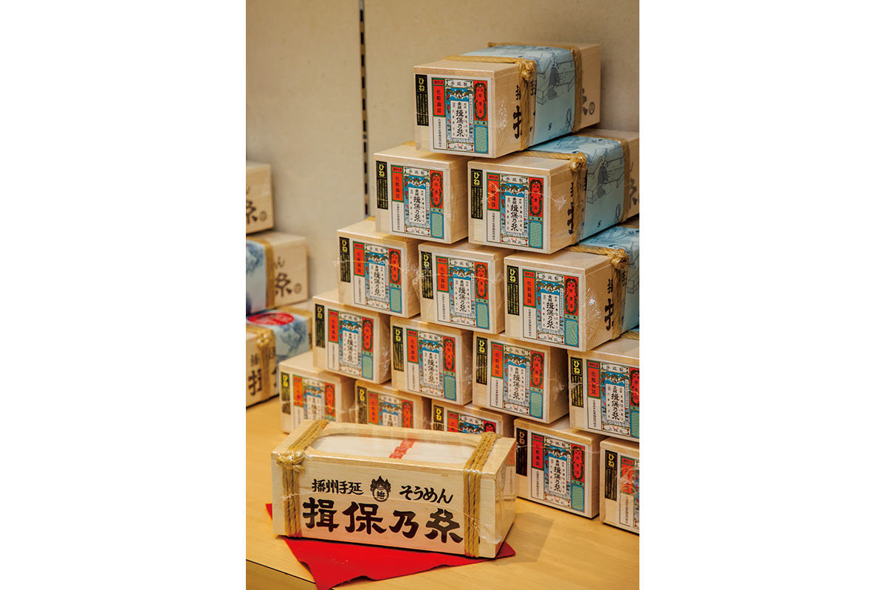
Тонкую пшеничную лапшу сомэн крестьяне с берегов реки Ибо делали в межсезонье, когда в полях не было работы. На равнине Бансю, как ещё называют Хариму, растёт хорошая пшеница. Её мололи на водяных мельницах, которые крутила река, а зимой с раннего утра вручную вытягивали лапшу. Река помогала и дальше: по ней готовую сомэн сплавляли к морю, а оттуда через пролив Акаси везли в Киото и Осаку, где её больше всего покупали.
Сомэн обычно ценят за то, что её легко приготовить, и за лёгкий вкус. Зная эту историю, начинаешь замечать, сколько за простой лапшой стоит труда и времени. Её историю рассказывает музей «Ибо-но ито Сомэн-но сато» в Тацуно, при нём работает ресторан лапши.
Музей «Ибо-но ито Сомэн-но сато»
- Адрес
- префектура Хёго, Тацуно, Камиока-тё Окумура, 56
- Телефон
- +81 791-65-9000
- Часы работы
- выставка 9:00–17:00 (вход до 16:30), ресторан 11:00–21:00 (последний заказ в 20:00)
- Выходные
- понедельник, новогодние праздники
- Сайт
- ibonoito.or.jp
Соус
«Хигасимару»: Тацуно, родина светлого соевого соуса
Если в Японии речь заходит о светлом соевом соусе усукути, многие сразу вспоминают «Хигасимару». У такого соуса сдержанный цвет и богатый аромат, поэтому его издавна используют в сёдзин рёри, буддийской постной кухне, и в изысканной кухне кайсэки. Обычный соевый соус варят из сои, пшеницы и соли, а в усукути добавляют ещё и рис. Главное условие: мягкая подземная вода реки Ибо, в которой мало железа. Так что этот соус тоже рождён равниной Бансю и морем Харима-нада. Завод «Хигасимару» и сегодня стоит на берегу реки Ибо, и по продажам светлого соуса компания первая в стране.
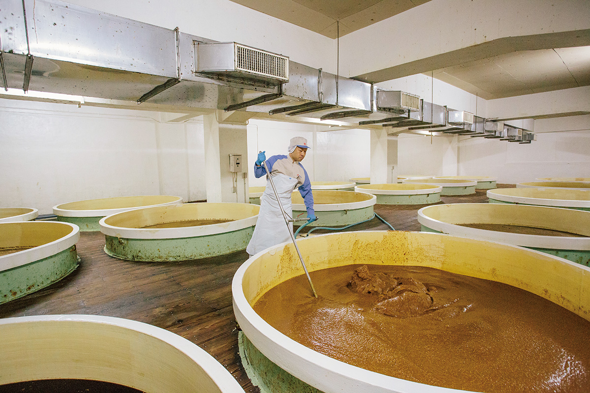
«Хигасимару», первый завод (экскурсии)
- Адрес
- префектура Хёго, Тацуно, Тацуно-тё Томинага, 288
- Телефон
- +81 791-63-4567 (по предварительной записи)
- Часы работы
- экскурсии 10:00–11:30 и 13:30–15:00, около 90 минут
- Выходные
- экскурсии только в будни, кроме новогодних праздников и летних каникул завода; записаться нужно за неделю
Ремесло
Ножницы Бансю едут в мир
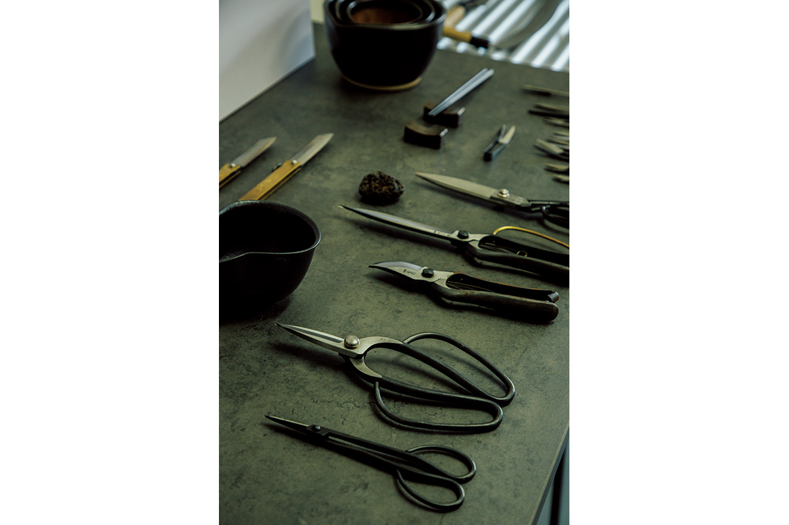
Харима издавна славилась и ножами, и ножницами. Ремесло почти угасло, но его подхватили молодые. «Татибасами» и «нигирибасами» звучат загадочно, но это два главных домашних инструмента: большие ножницы для раскроя ткани и маленькие пружинные ножницы, которыми обрезают нитки и делают тонкую работу. Ими пользовались всё реже, мастеров становилось меньше, и промысел шёл к концу.
Тогда за дело взялся дизайнер Синъя Кобаяси, уроженец этих мест. Под маркой «Бансю хамоно», то есть «ножи Бансю», его студия «Сиракансу сёкудо» вывела ножницы на выставки в Нью-Йорке и Амстердаме, и там их приняли хорошо. Появились и молодые люди, которые хотят учиться ремеслу. Похоже, привычка пользоваться хорошими домашними ножницами скоро вернётся и в Японию, и в другие страны.
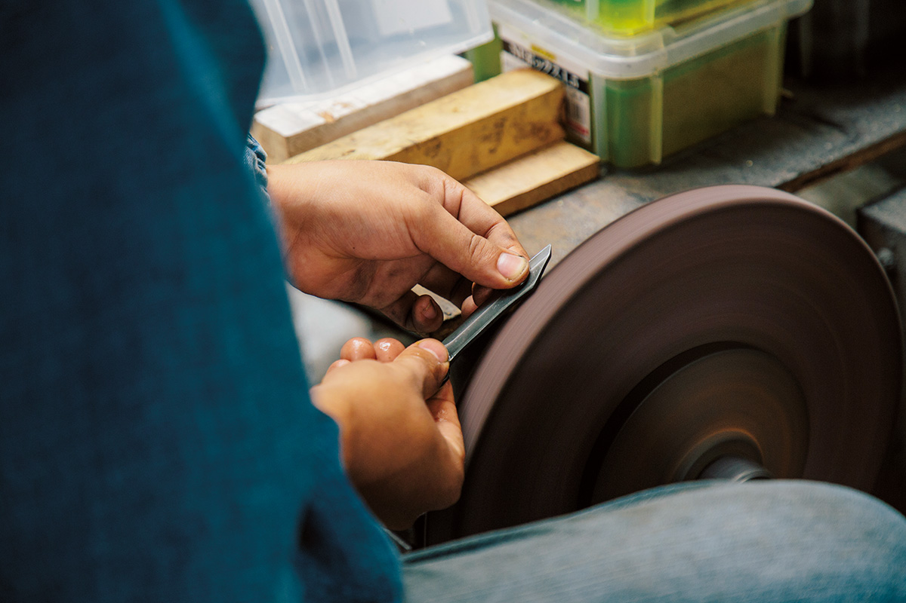
Сувениры
Три подарка, которые везут домой
Знаменитых продуктов в Хёго так много, что выбрать подарок непросто. Модные новинки хороши, но мы выбрали то, чем местные гордятся уже много поколений.
«Гансо Харимая»: закат над Ако в форме пирожка
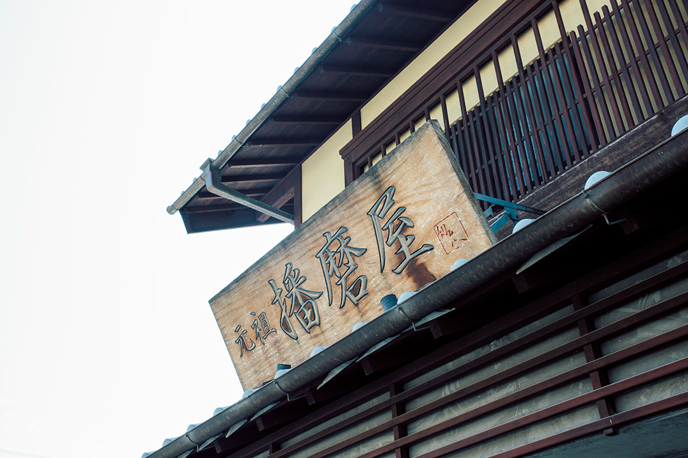
Солёные пирожки сиоадзи-мандзю пекут в Ако несколько кондитерских, но рекомендуем «Гансо Харимая»: здесь их придумали. В эпоху Эдо (1603–1868) эти сладости подносили князьям Ако и дому сёгунов Токугава, и сегодня их делают по тому же рецепту. Ровный круглый пирожок, как говорят, изображает солнце, которое садится в море у Ако.
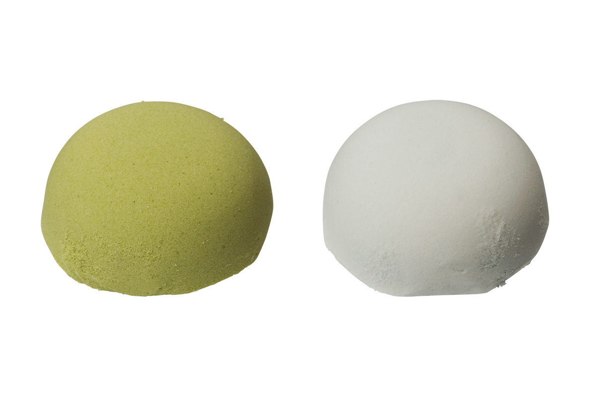
«Гансо Харимая»
- Адрес
- префектура Хёго, Ако, Одзаки, 222
- Телефон
- +81 791-42-2300
- Часы работы
- 8:00–17:00
- Выходные
- 1 января
«Каготё»: к рису и к сакэ
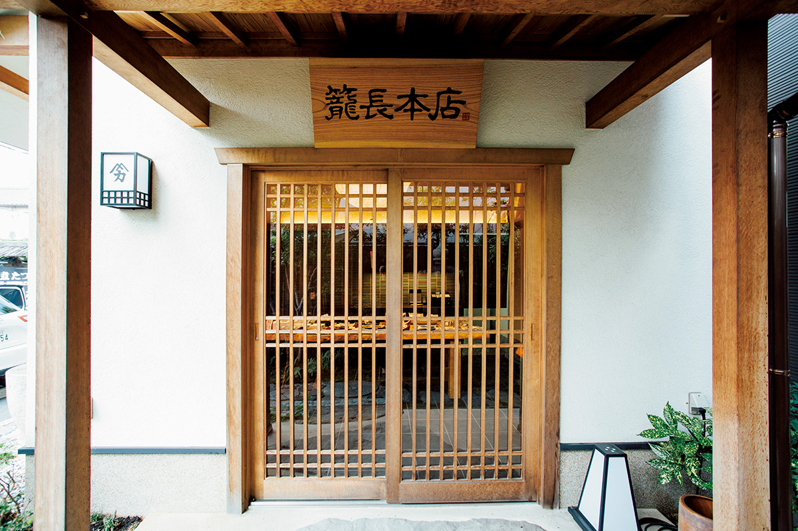
Весной в районах Хансин и Харима готовят «иканаго-но кугини»: мелкую рыбку иканаго томят в соевом соусе. В «Каготё» берут иканаго прямо с улова, местный нефильтрованный соевый соус первого отжима и ароматные пряности. Это старая закуска для долгого хранения, с которой хочется ещё риса и ещё сакэ.
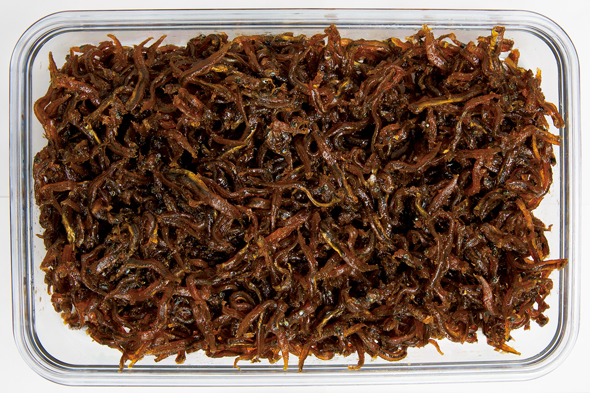
«Каготё», главная лавка
- Адрес
- префектура Хёго, Химэдзи, Ясиро, 739-5
- Телефон
- +81 79-222-0107
- Часы работы
- 10:00–16:00
- Выходные
- среда, суббота, воскресенье и праздники
- Сайт
- kagocho.com
«Фудзиэя Бундай»: ёкан для всего Акаси
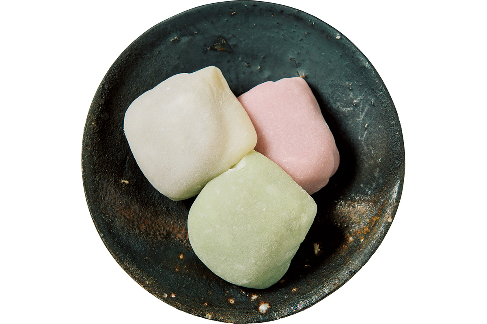
«Если ёкан, то только отсюда», говорят жители Акаси. Густой «дэтти-ёкан» из фасоли адзуки сладкий в меру, и вкус фасоли в нём на первом месте. Основатель лавки придумал его в 1818 году, чтобы сладкое могли позволить себе простые люди. Мастера и покупатели сменились не одно поколение, а сладость Акаси осталась прежней.
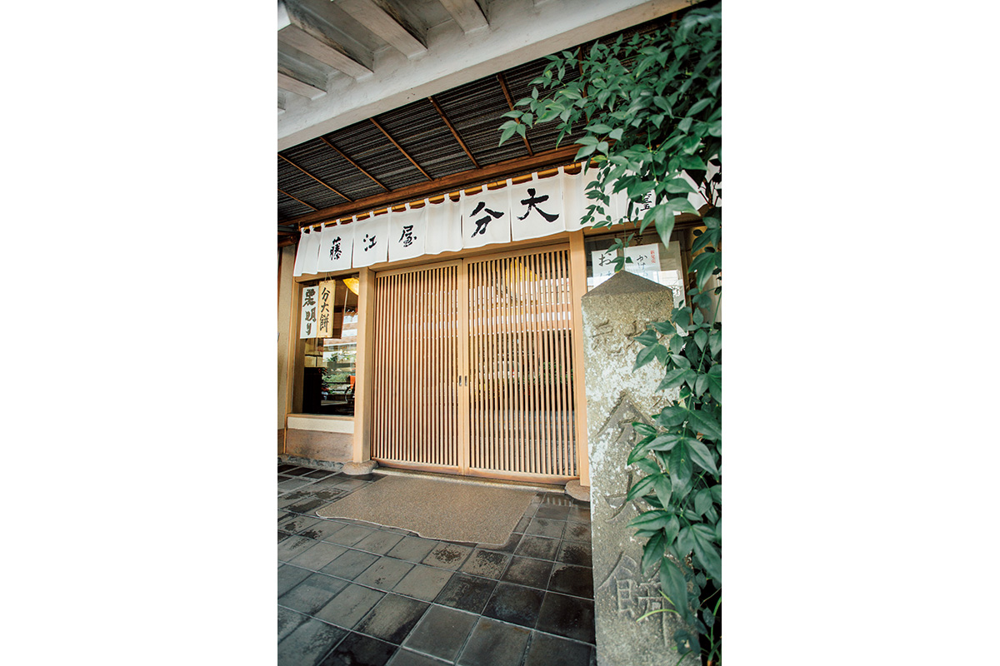
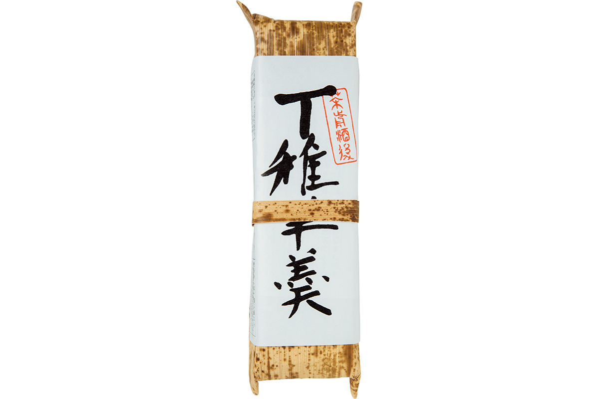
«Фудзиэя Бундай», главная лавка
- Адрес
- префектура Хёго, Акаси, Хоммати, 1-12-17
- Телефон
- +81 78-911-3635
- Часы работы
- 9:00–17:00
- Выходные
- вторник
- Сайт
- bundai.co.jp
Праздник
Ако-гиси: 47 ронинов возвращаются в город
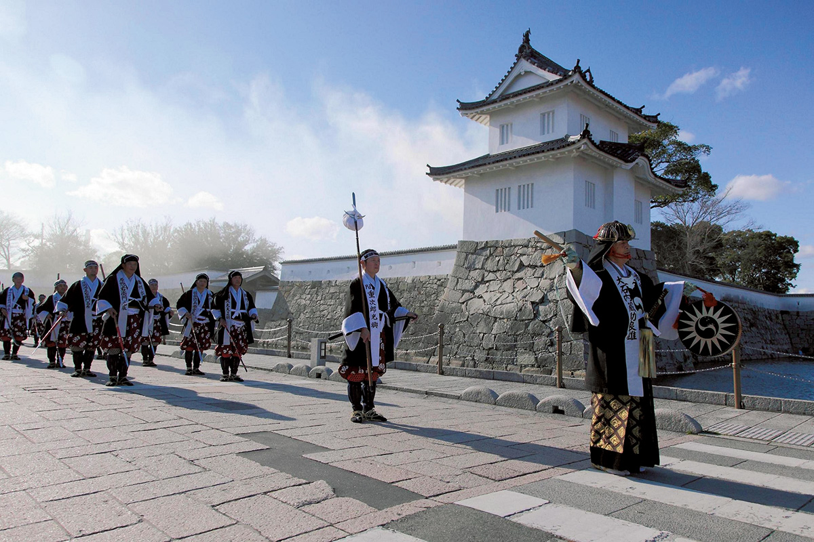
Праздник «Ако-гиси-сай» проходит каждый год 14 декабря, в день, когда «верные вассалы Ако» отомстили за своего господина. По улицам города идёт костюмированное шествие, а в разных местах Ако работают ярмарки местных продуктов и другие мероприятия. В 2020 году шествие и праздничные мероприятия отменили из-за пандемии.
Кто такие эти вассалы? В 1701 году князь Ако обнажил меч на высокопоставленного чиновника сёгуната прямо в замке Эдо. Князю приказали совершить сэппуку, а его владения отобрали. Его самураи стали ронинами, воинами без господина. Почти два года они скрывали свои намерения, а в ночь на 14-й день 12-го месяца 15-го года Гэнроку (по нашему календарю это 30 января 1703 года) 47 ронинов ворвались в усадьбу обидчика в Эдо и отомстили за князя. После этого они по приговору сёгуната сами совершили сэппуку. Их верность стала в Японии образцом самурайской чести, а история легла в основу пьес кабуки и множества фильмов.
Праздник «Ако-гиси-сай»
- Даты
- 14 декабря
- Адрес
- префектура Хёго, Ако, руины замка Ако, улица Осиро-доори, площадь Икицуги и окрестности
- Телефон
- +81 791-43-6839 (отдел промышленности и туризма мэрии Ако)
Фото: Юри Ямасаки.